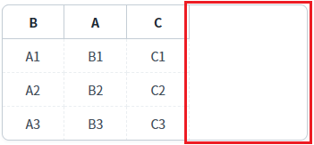
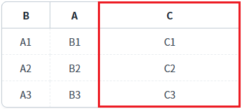
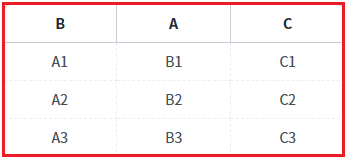
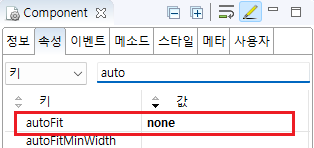

GridView의 'autoFit' 속성을 사용하여, 컬럼의 너비를 GridView의 너비에 따라 자동으로 조절되도록 설정한 예제입니다.
'autoFit' 속성을 설정하면 가로 스크롤이 생기지 않습니다.
GridView의 너비가 기준 값보다 작을 때 가로 스크롤이 생기도록 설정할 경우에는 'autoFitMinWidth' 속성을 추가로 설정합니다.
폭 자동 조절 안 함(기본 설정)
마지막 컬럼의 폭이 자동 조절
모든 컬럼의 폭이 자동 조절
예제 영역 '(기본설정) autoFit - none'에 구성된 GridView에서 테스트합니다.1
실행된 결과를 확인합니다.
GridView의 너비가 모든 컬럼의 폭의 합산 값보다 크게 지정되어 우측에 여백이 있습니다.
Image 1.브라우저(Chrome) 실행 예시

예제 영역 'autoFit - lastColumn'에 구성된 GridView에서 테스트합니다.1
실행된 결과를 확인합니다.
마지막 컬럼의 폭이 자동 조절됩니다.
Image 2.브라우저(Chrome) 실행 예시

예제 영역 'autoFit - allColumn'에 구성된 GridView에서 테스트합니다.1
실행된 결과를 확인합니다.
모든 컬럼의 폭이 자동 조절됩니다.
Image 3.브라우저(Chrome) 실행 예시

1
STEP 1: GridView의 속성을 정의합니다.
[필수] autoFit="옵션 값"
[default: none, lastColumn, allColumn] 폭 자동 조절
(옵션 설명)
none : 열의 너비를 자동 조정하지 않음
allColumn : 모든 열의 너비를 균등하게 조정
lastColumn : 마지막 열의 너비만 조정
Image 4.웹스퀘어 스튜디오의 Component View - 속성 설정 예시

Example 1.Source
<!-- gridView 의 소스 본문 예시 --> <w2:gridView autoFit="none" dataList="data:dlt_exam" style="height: 90px;"> <!-- 중략 --> </w2:gridView>
autoFit